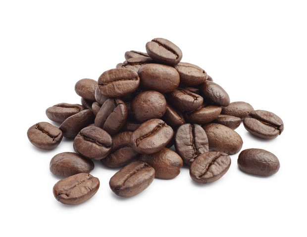
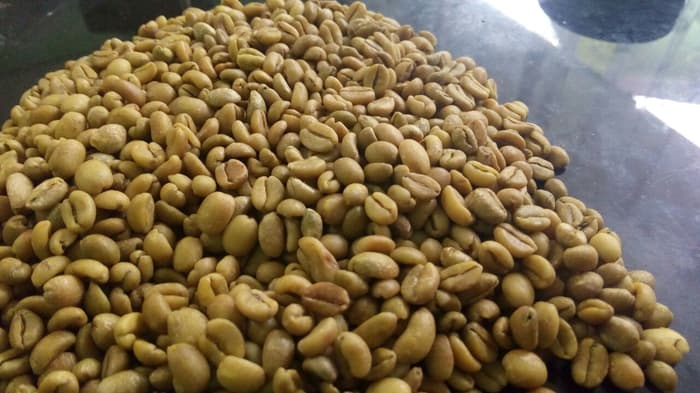

Jenis Kopi
Ada 25 jenis kopi yang buahnya paling komersil, tetapi hanya ada 4 jenis kopi yang paling terkenal di dunia jual beli biji kopi.
Dan keempat jenis kopi tersebut adalah kopi arabika, kopi robusta, kopi liberika, dan kopi ekselsa.
Kopi Arabica
Kopi arabika awalnya berasal dari negara Brazil. Kopi arabika merupakan jenis kopi pertama yang ditemukan dan dibudidayakan
oleh manusia hingga sekarang.
Kopi arabika memiliki ciri-ciri morfologi tanaman sebagai berikut : kopi arabika memiliki perakaran yang lebih dalam, daunnya tipis,
percabangan tanaman yang lentur, ukuran biji kecil dengan warna hijau tua hingga merah gelap. Tanaman kopi jenis ini membutuhkan waktu
9 bulan untuk berbunga dan berbuah. Kopi arabika tumbuh di ketinggian 700-1700 m dpl (diatas permukaan laut) dengan suhu 16-20 derajat celcius.
Kelemahan dari jenis kopi arabika ini adalah salah satu jenis kopi yang rentan terhadap serangan penyakit HV Hemileia vastratix atau penyakit karat daun.
Namun, kualitas bijinya jauh lebih baik dari kopi liberika dan robusta. Dan juga, kopi jenis arabika terkenal nikmat dan memiliki aroma yang sedap dan kuat.
Kopi arabika saat ini telah menguasai sebagian besar pasar kopi dunia dan harganya jauh lebih tinggi daripada jenis kopi lainnya. Di Indonesia sendiri kita dapat
menemukan jenis kopi arabika ini dari mulai Aceh sampai di Papua.
Kopi Robusta

Kopi robusta awalnya ditemukan di negara Kongo. Jenis kopi ini dapat tumbuh baik di ketinggian 400-700 m dpl (diatas permukaan laut) dengan suhu 21-24 derajat celcius.
Jenis kopi robusta lebih tahan terhadap serangan penyakit karat daun. Umumnya, jenis kopi ini memerlukan waktu 10-11 bulan untuk proses pembuahan dari bunga hingga menjadi buah.
Kelemahan dari kopi berjenis robusta ini adalah rasanya yang kurang mantap dan cenderung lebih pahit dibandingkan dengan arabika. Harganya pun jauh lebih murah dibandingkan dengan kopi berjenis arabika,
sehingga di Indonesia kopi berjenis ini dikenal juga dengan “kopi murah”.
Kopi Liberika
Kopi liberika berasal dari Liberia, Afrika barat. Kopi liberika dapat tumbuh sekitar 9 meter dari tanah. Jenis kopi ini memiliki ukuran daun, bunga, cabang, buah, dan pohon yang lebih besar dibandingkan
dengan jenis arabika dan robusta. Kopi liberika agak rentan terhadap penyakit HV Hemileia vastratix atau penyakit karat daun.
Memiliki kualitas buah yang relatif rendah, namun kopi berjenis liberika mampu berbuah sepanjang tahun dan dapat tumbuh dengan baik di dataran rendah. Kopi liberika yang pernah didatangkan ke Indonesia yaitu yang bervarietas Ardoniana dan Durvei.
Kopi Ekselsa

Kopi ekselsa berasal dari Afrika barat, pertama kali jenis kopi ini ditemukan di dekat Danau Chad. Kopi jenis Ekselsa ini sangat cocok dibudidayakan di daerah dataran rendah yang basah. Kopi jenis ini sangat mudah dalam hal pembudidayaannya,
karena kopi berjenis ekselsa tidak rentan diserang penyakit. Kopi ini juga dapat ditanam di areal lahan gambut.
Di Indonesia, kopi berjenis ekselsa mudah ditemui di kabupaten Tanjung Jabung Barat Provinsi Jambi, karena topografi lahan di daerah sana sangat mendukung untuk ditanami kopi berjenis ekselsa ini. Memang harga dan kualitasnya masih jauh dibawah
jenis kopi arabika dan robusta tetapi karena tanaman kopi berjenis ini tidak mudah diserang penyakit, sehingga banyak juga petani kopi yang membudidayakan kopi berjenis ekselsa ini.